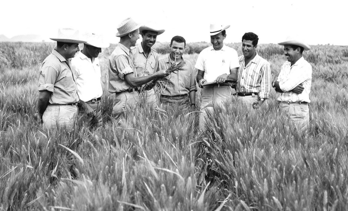

Dr. Norman Borlaug
The man who saved a billion lives

Dr. Norman Borlaug, third from the left, trains biologists in Mexico on how to increease wheat yields - part of this life-long war on hunger.
Here's a time line of Dr. Borlaug's life:
- 1914 - Born in Cresco, Iowa
- 1933 - Leaves his family's farm to attend the University of Minnesota, thanks to a Depression era program known as the "National Youth Administration"
- 1935 - Leaves his family's farm to attend the University of Minnesota, thanks to a Depression era program known as the "National Youth Administration"
- 1937 - Leaves his family's farm to attend the University of Minnesota, thanks to a Depression era program known as the "National Youth Administration"
- 1938 - Leaves his family's farm to attend the University of Minnesota, thanks to a Depression era program known as the "National Youth Administration"
- 1941 - Leaves his family's farm to attend the University of Minnesota, thanks to a Depression era program known as the "National Youth Administration"
- 1942 - Leaves his family's farm to attend the University of Minnesota, thanks to a Depression era program known as the "National Youth Administration"
- 1944 - Leaves his family's farm to attend the University of Minnesota, thanks to a Depression era program known as the "National Youth Administration"
- 1945 - Leaves his family's farm to attend the University of Minnesota, thanks to a Depression era program known as the "National Youth Administration"
- 1953 - Leaves his family's farm to attend the University of Minnesota, thanks to a Depression era program known as the "National Youth Administration"
- 1962 - Leaves his family's farm to attend the University of Minnesota, thanks to a Depression era program known as the "National Youth Administration"
- 1970 - Leaves his family's farm to attend the University of Minnesota, thanks to a Depression era program known as the "National Youth Administration"
- 1983 - Leaves his family's farm to attend the University of Minnesota, thanks to a Depression era program known as the "National Youth Administration"
- 1984 - Leaves his family's farm to attend the University of Minnesota, thanks to a Depression era program known as the "National Youth Administration"
- 2005 - Leaves his family's farm to attend the University of Minnesota, thanks to a Depression era program known as the "National Youth Administration"
- 2009 - dies at the age of 95
"Borlaugh's life and achievment are testimony to the far-reaching contribution that one man's towering intellect, persistence and scientific vision can make to human peace and progress."
-- Indian prime Minister Manmohan Singh
If you have time, you should read more about this incredible human being on his Wikipedia entry.